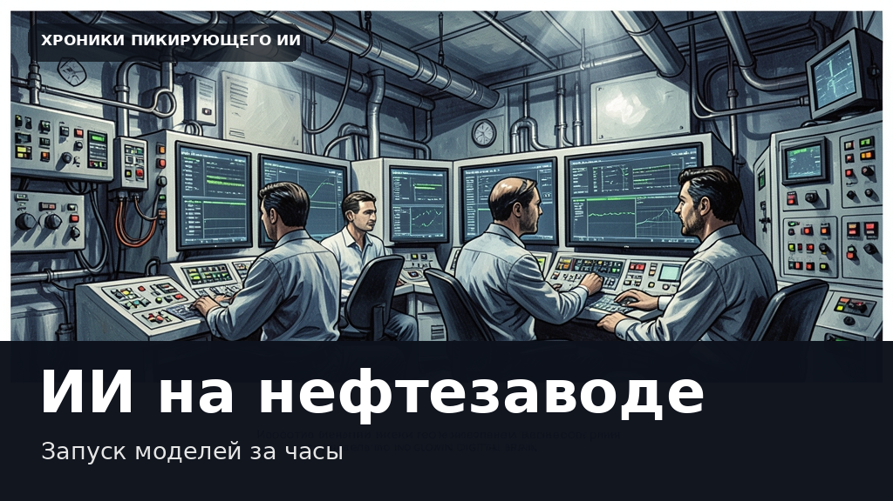

Нефтяники из GS Caltex научили ИИ собирать готовые конвейеры за пару часов
Этот текст и иллюстрация созданы автоматически. В статье могут быть неточности; это не опубликованная редакционная новость.

Южнокорейская энергетическая и химическая компания GS Caltex решила избавить инженеров от рутинной бумажной рутины при запуске нейросетей в производство. На предприятиях внедрили связку из визуальной среды Amazon SageMaker Canvas и автоматизированных конвейеров SageMaker Pipelines. Раньше перенос готовой модели из экспериментального интерфейса в рабочий процесс занимал у инженеров около недели, а теперь на это уходит всего несколько часов. Хитрость подхода заключается в том, что профильные специалисты — те самые люди, которые лучше всего разбираются в химических процессах и физических свойствах сырья, — могут собирать и проверять модели в SageMaker Canvas абсолютно без написания кода. Инструмент записывает все шаги обработки данных с помощью встроенного модуля Data Wrangler, аккуратно фиксируя каждую строчку логики и параметров. Когда модель готова, в дело вступают инженеры по машинному обучению. Раньше им приходилось вручную переписывать настройки путей, настраивать соединительные швы между предобработкой и задачами инференса, а также тратить кучу времени на согласования. Теперь этот процесс полностью автоматизирован: система берёт готовый файл с настройками преобразования данных, проверяет форматы и регистрирует модель в общем реестре. Более того, чтобы не тратить лишние деньги на круглосуточную аренду вычислительных мощностей, компания настроила запуск пакетного анализа каждые тридцать минут. В назначенное время сервис Amazon EventBridge поднимает конвейер, который быстро прогоняет накопившиеся данные через те же самые пайплайны и бережно складывает результаты в хранилище Amazon S3. Такой подход позволил не только ускорить развертывание умных алгоритмов на производстве, но и заметно сократить расходы на содержание облачной инфраструктуры.
Дата объявления в RSS: 2026-11-13. Дата черновика: 2026-11-16.